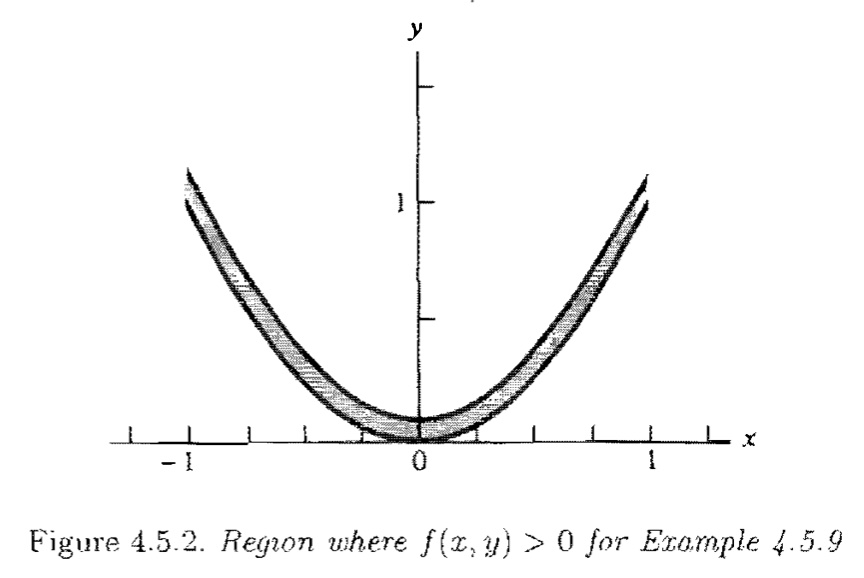

[统计推断]第四章·二维随机变量
\[ \newcommand{\E}{\mathbb E} \newcommand{\R}{\mathbb R} \newcommand{\d}{\mathrm d} \newcommand{\Var}{\mathrm{Var}} \newcommand{\Cov}{\mathrm{Cov}} \]
本篇是《统计推断》第四章多维随机变量的前 5 节内容，主要关注于二维随机变量。
1 联合分布与边缘分布
\(n\) 维随机向量：样本空间 \(S\) 到欧氏空间 \(\R^n\) 的函数。
联合 pmf / pdf： \[ P((X,Y)\in A)=\begin{cases}\sum_{(x,y)\in A}f(x,y)&&\text{discrete}\\\iint_A f(x,y)\d x\d y&&\text{continuous}\end{cases} \] 期望： \[ \E[g(X,Y)]=\begin{cases}\sum_{(x,y)\in\R^2}g(x,y)f(x,y)&&\text{discrete}\\\int_{-\infty}^{+\infty}\int_{-\infty}^{+\infty}g(x,y)f(x,y)\d x\d y&&\text{continuous}\end{cases} \] 边缘 pmf / pdf： \[ f_X(x)=\begin{cases}\sum_{y\in\R}f_{X,Y}(x,y)&&\text{discrete}\\\int_{-\infty}^{+\infty}f_{X,Y}(x,y)\d y&&\text{continuous}\end{cases} \] 联合 cdf： \[ F(x,y)=P(X\leq x,Y\leq y) \] 对连续二维随机向量： \[ \frac{\partial^2F(x,y)}{\partial x\partial y}=f(x,y) \]
2 条件分布与独立性
2.1 条件分布、条件期望、条件方差
conditional pmf / pdf：设 \(f_X(x)>0\)， \[ f(y\mid x)=\frac{f(x,y)}{f_X(x)} \] 条件期望： \[ \E[g(Y)\mid X=x]=\begin{cases}\sum_yg(y)f(y\mid x)&&\text{discrete}\\\int_{-\infty}^{+\infty}g(y)f(y\mid x)\mathrm dy&&\text{continuous}\end{cases} \] 条件方差： \[ \Var(Y\mid X=x)=\E[Y^2\mid X=x]-(\E[Y\mid X=x])^2 \] \(Y\) 在条件 \(X=x\) 下的条件分布通常因 \(x\) 的取值而异，所以我们实际上得到了 \(y\) 的一族概率分布，每一个分布对应着一个 \(x\)。类似的，\(\E[g(Y)\mid X=x]\) 是 \(x\) 的函数，因此 \(E[g(Y)\mid X]\) 是一个取值依赖于 \(X\) 的随机变量。
2.2 独立的定义和一个充要条件
独立： \[ f(x,y)=f_X(x)f_Y(y) \] 易知：\(f(y\mid x)=f_Y(y)\)，即条件 \(X=x\) 并没有提供关于 \(Y\) 的额外信息。
引理：\(X\) 和 \(Y\) 独立当且仅当存在函数 \(g(x)\) 和 \(h(y)\)，使得对于任意 \(x,y\in\R\) 都有： \[ f(x,y)=g(x)h(y) \] Proof. 取 \(g(x)=f_X(x),\,h(y)=f_Y(y)\) 即可证明必要性。为证明充分性，不妨设 \(X,Y\) 都是连续随机变量，并令： \[ c=\int_{-\infty}^{+\infty}g(x)\mathrm dx\quad d=\int_{-\infty}^{+\infty}h(y)\mathrm dy \] 则： \[ \begin{align} cd&=\int_{-\infty}^{+\infty}\int_{-\infty}^{+\infty}g(x)h(y)\mathrm dx\mathrm dy\\ &=\int_{-\infty}^{+\infty}\int_{-\infty}^{+\infty}f(x,y)\mathrm dx\mathrm dy\\ &=1 \end{align} \] 且边缘 pdf 为： \[ \begin{align} f_X(x)&=\int_{-\infty}^{+\infty}f(x,y)\mathrm dy=\int_{-\infty}^{+\infty}g(x)h(y)\mathrm dy=dg(x)\\ f_Y(y)&=\int_{-\infty}^{+\infty}f(x,y)\mathrm dx=\int_{-\infty}^{+\infty}g(x)h(y)\mathrm dx=ch(y) \end{align} \] 于是： \[ f(x,y)=g(x)h(y)=cdg(x)h(y)=f_X(x)f_Y(y) \] Q.E.D.
注记：虽然 \(f(x,y)=g(x)h(y)\) 并不意味着 \(g(x)\) 和 \(h(y)\) 就是边缘分布，但是他们和边缘分布呈倍数关系，且这两个倍数的系数乘积为 \(1\).
2.3 独立随机变量的期望和矩母函数
独立随机变量下，某些计算将变得十分简单：
定理：设 \(X,Y\) 是独立随机变量，则： \[ \E[g(X)h(Y)]=\E[g(X)]\E[h(Y)] \] Proof. 不妨设 \(X,Y\) 是连续随机变量，则： \[ \begin{align} \E[g(X)h(Y)]&=\int_{-\infty}^{+\infty}\int_{-\infty}^{+\infty}g(x)h(y)f(x,y)\mathrm dx\mathrm dy\\ &=\int_{-\infty}^{+\infty}\int_{-\infty}^{+\infty}g(x)h(y)f_X(x)f_Y(y)\mathrm dx\mathrm dy\\ &=\left(\int_{-\infty}^{+\infty}g(x)f_X(x)\mathrm dx\right)\left(\int_{-\infty}^{+\infty}h(y)f_Y(y)\mathrm dy\right)\\ &=\E[g(X)]\E[h(Y)] \end{align} \] Q.E.D.
应用上述定理，我们可以推导两个独立随机变量的和的矩母函数：
定理：设独立随机变量 \(X,Y\) 的矩母函数分别为 \(M_X(t)\) 和 \(M_Y(t)\)，则随机变量 \(Z=X+Y\) 的矩母函数为 \(M_Z(t)=M_X(t)M_Y(t)\).
Proof. \[ M_Z(t)=\E[e^{tZ}]=\E[e^{t(X+Y)}]=\E[e^{tX}e^{tY}]=\E[e^{tX}]\E[e^{tY}]=M_X(t)M_Y(t) \] Q.E.D.
例【独立正态随机变量的和】设 \(X\sim N(\mu,\sigma^2),\,Y\sim N(\gamma,\tau^2)\) 是两个独立的正态随机变量，则随机变量 \(Z=X+Y\) 服从 \(N(\mu+\gamma,\sigma^2+\tau^2)\).
Proof. 根据前面章节的计算，我们知道 \(X,Y\) 的矩母函数分别是： \[M_X(t)=\exp(\mu t+\sigma^2t^2/2)\quad M_Y(t)=\exp(\gamma t+\tau^2t^2/2)\] 于是根据上一条定理，有： \[M_Z(t)=M_X(t)M_Y(t)=\exp((\mu+\gamma)t+(\sigma^2+\tau^2)t^2/2)\] 于是 \(Z\sim N(\mu+\gamma,\sigma^2+\tau^2)\).
Q.E.D.
3 二维变换
3.1 二维随机向量的向量函数
设 \((X,Y)\) 是概率分布已知的二维随机向量，考察新的二维随机向量 \((U, V)\)，其中 \(U=g_1(X,Y),\,V=g_2(X,Y)\).
若 \((X,Y)\) 是离散的，则存在一个可数集 \(A\) 使得 \((X,Y)\) 的联合 pmf 在其上取值大于 \(0\). 令 \(B=\{(u,v):\exists (x,y)\in A\text{ s.t. }u=g_1(x,y),\,v=g_2(x,y)\}\)，则 \(B\) 是离散随机向量 \((U,V)\) 全体可能的取值所构成的集合，是可数集。记 \(A_{uv}=\{(x,y)\in A:g_1(x,y)=u,\,g_2(x,y)=v\}\)，则： \[ f_{U,V}(u,v)=P(U=u,V=v)=P((X,Y)\in A_{uv})=\sum_{(x,y)\in A_{uv}}f_{X,Y}(x,y) \]
例【独立泊松随机变量的和】设 \(X\) 和 \(Y\) 是一对独立的泊松随机变量，参数分别为 \(\theta\) 和 \(\lambda\)，则 \(X+Y\) 服从参数为 \(\theta+\lambda\) 的泊松分布。
若 \((X,Y)\) 是连续的，且 \(u=g_1(x,y)\) 和 \(v=g_2(x,y)\) 都是一对一的，则我们能从中解出逆变换：\(x=h_1(u,v),\,y=h_2(u,v)\). 定义 Jacobi 行列式： \[ J=\begin{vmatrix}\frac{\partial x}{\partial u}&\frac{\partial x}{\partial v}\\\frac{\partial y}{\partial u}&\frac{\partial y}{\partial v}\end{vmatrix}=\frac{\partial x}{\partial u}\frac{\partial y}{\partial v}-\frac{\partial x}{\partial v}\frac{\partial y}{\partial u} \] 则： \[ f_{U,V}(u,v)=f_{X,Y}(h_1(u,v),h_2(u,v))|J| \] > 回忆第二章中，随机变量的单调函数的结论： > \[ > f_Y(y)=f_X(g^{-1}(y))\left|\frac{\mathrm d}{\mathrm dy}g^{-1}(y)\right| > \] > 可以看见他们具有类似的形式，二维情形就是一维的拓展。
3.2 独立随机变量的函数依然独立
定理：设 \(X\) 和 \(Y\) 是一对独立的随机变量，\(g(x)\) 是 \(x\) 的一元函数，\(h(y)\) 是 \(y\) 的一元函数，则随机变量 \(U=g(X)\) 与 \(V=h(Y)\) 独立。
Proof. 不妨设 \(U,V\) 都是连续随机变量。记：\(A_u=\{x:g(x)\leq u\},\,B_v=\{y:h(y)\leq v\}\)，则 \(U,V\) 的联合 cdf 为： \[ F_{U, V}(u, v)=P(U\leq u, V\leq v)=P(X\in A_u,Y\in B_v)=P(X\in A_u)P(Y\in B_v) \] 故联合 pdf 为： \[ f_{U, V}(u, v)=\frac{\partial^2}{\partial u\partial v}F_{U, V}(u, v)=\left(\frac{\mathrm d}{\mathrm du}P(X\in A_u)\right)\left(\frac{\mathrm d}{\mathrm dv}P(X\in B_v)\right) \] 该乘积的第一项是 \(u\) 的函数，第二项是 \(v\) 的函数，由上一节独立的充要条件知 \(U, V\) 独立。
Q.E.D.
4 多层模型与混合分布
4.1 多层模型
把事件分层建模往往更加容易。一个经典的例子是，一只昆虫产下大量的卵，已知每颗卵的成活率为 \(p\)，问平均有多少颗卵能存活？
昆虫产卵的数量 \(Y\) 是一个服从参数为 \(\lambda\) 的泊松分布的随机变量，存活卵的数量 \(X\) 是一个服从参数为 \((Y,p)\) 的二项分布的随机变量，因此我们可以建立分层模型： \[ \begin{align} &X\mid Y\sim\text{binomial}(Y, p)&&\text{第一层（顶层）}\\ &Y\sim \text{poisson}(\lambda)&&\text{第二层} \end{align} \] 那么 \(X\) 实际上具有如下分布： \[ \begin{align} P(X=x)&=\sum_{y=0}^{+\infty}P(X=x, Y=y)\\ &=\sum_{y=0}^{+\infty}P(X=x\mid Y=y)P(Y=y)\\ &=\sum_{y=0}^{+\infty}\binom{y}{x}p^x(1-p)^{y-x}\frac{e^{-\lambda}\lambda^y}{y!}\\ &=\frac{e^{-\lambda}(p\lambda)^x}{x!}\sum_{y=x}^{+\infty}\frac{(\lambda(1-p))^{y-x}}{(y-x)!}\\ &=\frac{e^{-\lambda}(p\lambda)^x}{x!}\sum_{t=0}^{+\infty}\frac{(\lambda(1-p))^{t}}{t!}&&t=y-x\\ &=\frac{e^{-\lambda}(p\lambda)^x}{x!}e^{\lambda(1-p)}\\ &=\frac{(p\lambda)^x}{x!}e^{-p\lambda} \end{align} \] 故 \(X\sim\text{poisson}(p\lambda)\)，与 \(Y\) 没有关系。
4.2 重期望公式
重期望公式：设 \(X，Y\) 是任意随机变量，若下列期望存在，则有： \[ \E X=\E[\E[X\mid Y]] \] Proof. 设 \(f(x,y)\) 是联合 pdf，则： \[ \E X=\iint xf(x,y)\mathrm dx\mathrm dy=\int\left[\int xf(x\mid y)\mathrm dx\right]f(y)\mathrm dy=\E[\E[X\mid Y]] \] Q.E.D.
4.3 混合分布
混合分布指的是多层模型导出的分布，可以定义为：若随机变量 \(X\) 的分布依赖于服从某分布的另一个量，则称 \(X\) 服从混合分布。
例【Poisson-Gamma 混合分布】设 \(Y\) 有多层模型： \[ \begin{align} &Y\mid \Lambda\sim\text{poisson}(\Lambda)\\ &\Lambda\sim \text{Gamma}(\alpha,\beta) \end{align} \] 则 \(Y\) 的边缘分布（当 \(\alpha\in\mathbb Z\) 时）为负二项分布： \[ \begin{align} P(Y=y)&=\int_0^{+\infty} P(Y=y,\Lambda=\lambda)\mathrm d\lambda\\ &=\int_0^{+\infty} P(Y=y\mid\Lambda=\lambda)P(\Lambda=\lambda)\mathrm d\lambda\\ &=\int_0^{+\infty}\frac{e^{-\lambda}\lambda^y}{y!}\frac{1}{\Gamma(\alpha)\beta^\alpha}\lambda ^{\alpha-1}e^{-\lambda/\beta}\mathrm d\lambda\\ &=\frac{1}{y!(\alpha-1)!\beta^\alpha}\int_0^{+\infty}\lambda ^{y+\alpha-1}e^{-\frac{\beta+1}{\beta}\lambda}\mathrm d\lambda\\ &=\frac{\beta^{y}}{y!(\alpha-1)!{(\beta+1)}^{y+\alpha}}\int_0^{+\infty}\left(\frac{\beta+1}{\beta}\lambda\right)^{y+\alpha-1}e^{-\left(\frac{\beta+1}{\beta}\lambda\right)}\mathrm d\left(\frac{\beta+1}{\beta}\lambda\right)\\ &=\frac{\beta^{y}}{y!(\alpha-1)!{(\beta+1)}^{y+\alpha}}\Gamma(y+\alpha)\\ &=\binom{y+\alpha-1}{y}\left(\frac{\beta}{\beta+1}\right)^{y}\left(\frac{1}{\beta+1}\right)^\alpha \end{align} \]
4.4 方差恒等式
设 \(X，Y\) 是任意随机变量，若下列期望存在，则有： \[ \Var X=\E[\Var(X\mid Y)]+\Var(\E[X\mid Y]) \] Proof. 根据 \(\Var X=\E X^2-(\E X)^2\) 和重期望公式，有： \[ \begin{align} &\E[\Var(X\mid Y)]+\Var(\E[X\mid Y])\\ =&\E[\E[X^2\mid Y]-(\E[X\mid Y])^2]+\E[(\E[X\mid Y])^2]-(\E[\E[X\mid Y]])^2\\ =&\E X^2-(\E X)^2\\ =&\Var X \end{align} \] Q.E.D.
5 协方差与相关系数
5.1 定义
随机变量 \(X\) 和 \(Y\) 的协方差为： \[ \Cov(X,Y)=\E[(X-\E X)(Y-\E Y)] \] 相关系数为： \[ \rho_{XY}=\frac{\Cov(X,Y)}{\sqrt{\Var X\Var Y}} \]
5.2 定理
定理：设 \(X,Y\) 是任意随机变量，则： \[ \Cov(X,Y)=\E XY-\E X\E Y \] Proof. \[ \begin{align} \Cov(X,Y)&=\E[(X-\E X)(Y-\E Y)]\\ &=\E[XY-X\E Y-Y\E X+\E X\E Y]\\ &=\E XY-\E X\E Y-\E X\E Y+\E X\E Y\\ &=\E XY-\E X\E Y\\ \end{align} \] Q.E.D.
定理：设 \(X\) 和 \(Y\) 是一对独立的随机变量，则 \(\Cov(X,Y)=\rho_{XY}=0\).
Proof. 由于 \(X,Y\) 独立，根据上一篇的定理知 \(\E XY=\E X\E Y\)，故 \(\Cov(X,Y)=\E XY-\E X\E Y=0\). Q.E.D.
但是，\(\Cov(X,Y)=0\) 或 \(\E XY=\E X\E Y\) 并不代表 \(X,Y\) 独立。
定理：设 \(X,Y\) 是任意随机变量，\(a,b\) 是任意两个常量，则： \[ \Var(aX+bY)=a^2\Var X+b^2\Var Y+2ab\Cov(X,Y) \] Proof. \[ \begin{align} \Var(aX+bY)&=\E[(aX+bY-a\E X-b\E Y)^2]\\ &=\E[(a(X-\E X)+b(Y-\E Y))^2]\\ &=\E[a^2(X-\E X)^2]+\E[b^2(Y-\E Y)^2]+\E[2ab(X-\E X)(Y-\E Y)]\\ &=a^2\E[(X-\E X)^2]+b^2\E[(Y-\E Y)^2]+2ab\E[(X-\E X)(Y-\E Y)]\\ &=a^2\Var X+b^2\Var Y+2ab\Cov(X,Y) \end{align} \] Q.E.D.
特别的，如果 \(X,Y\) 独立，那么 \(\Var(aX+bY)=a^2\Var X+b^2\Var Y\).
5.3 协方差与相关本质是度量线性关系
定理：设 \(X,Y\) 是任意随机变量，则：
- \(\rho_{XY}\in[-1,1]\)
- \(|\rho_{XY}|=1\) 当且仅当存在数 \(a\neq 0\) 以及 \(b\) 使得 \(P(Y=aX+b)=1\). 若 \(\rho_{XY}=1\)，则 \(a>0\)；若 \(\rho_{XY}=-1\)，则 \(a<0\).
Proof. 考察关于 \(t\) 的函数 \(h(t)\)： \[ h(t)=\E[((X-\E X)t+(Y-\E Y))^2]=t^2\Var X+2t\Cov(X,Y)+\Var Y \] 这是一个二次函数。由于对于任意 \(t\)，\(h(t)\) 是一个非负随机变量的期望，所以其值非负，故二次函数判别式小于等于 \(0\)： \[ \Delta=4\Cov(X,Y)^2-4\Var X\Var Y\leq 0 \] 得到： \[ \Cov(X,Y)^2\leq \Var X\Var Y\implies \rho_{XY}^2=\frac{\Cov(X,Y)^2}{\Var X\Var Y}\leq 1\implies-1\leq\rho_{XY}\leq 1 \] 这证明了第一个结论。
另外，当 \(\rho_{XY}^2=1\) 时，\(\Delta=0\)，说明 \(h(t)\) 有一个二重根，设为 \(t_0\)，即 \(h(t_0)=0\). 为书写方便，记 \(Z=((X-\E X)t_0+(Y-\E Y))^2\geq 0\)，则 \[ h(t_0)=\E Z=\int_0^{+\infty} zP(Z=z)\mathrm dz \] 可以看出，\(h(t_0)=0\) 当且仅当 \(P(Z=0)=1\)，即： \[ P(((X-\E X)t_0+(Y-\E Y))^2=0)=1 \] 也即： \[ P((X-\E X)t_0+(Y-\E Y)=0)=1 \] 取 \(a=-t_0,\,b=t_0\E X+\E Y\) 即得第二个结论的前半部分。
又因为从 \(h(t_0)=0\) 中可以解出：\(t_0=\frac{-2\Cov(X,Y)\pm\sqrt\Delta}{2\Var X}=-\frac{\Cov(X,Y)}{\Var X}\)，可以看出 \(a\) 与 \(\rho_{XY}\) 同号，这证明了第二个结论的后半部分。
Q.E.D.
例【依赖关系很强但相关系数很小】：设 \(X\sim U(-1,1)\)，\(Z\sim U(0,1/10)\)，且 \(X\) 与 \(Z\) 独立。令 \(Y=X^2+Z\)，考察随机向量 \((X,Y)\)，在给定 \(X=x\) 的条件下，\(Y=x^2+Z\)，条件分布是 \(U(x^2,x^2+1/10)\)，即： \[f_Y(y\mid X=x)=\begin{cases}10,&x^2\leq y\leq x^2+1/10\\0,&\text{otherwise}\end{cases}\] 于是联合分布： \[f(x,y)=f_X(x)f_Y(y\mid X=x)=5\quad -1<x<1,\,x^2<y<x^2+1/10\] 下图显示了 \((X,Y)\) 的支撑集：

可以看出，\(X,Y\) 有着很强的依赖关系，但这种关系是非线性的，我们下面证明，它们的相关系数其实是 \(0\).
由于 \(\E X=\E X^3=0\)，\(\E XZ=\E X\E Z=0\)，故 \[\begin{align}\Cov(X,Y)&=\E [X(X^2+Z)]-\E X\E(X^2+Z)\\&=\E X^3+\E XZ-\E X\E(X^2+Z)\\&=0\end{align}\] 进而 \(\rho_{XY}=0\).
5.4 二维正态分布
设 \(-\infty<\mu_X<+\infty,\,-\infty<\mu_Y<+\infty,\,0<\sigma_X,\,0<\sigma_Y,\,-1<\rho<1\)，则期望为 \(\mu_X,\mu_Y\)、方差为 \(\sigma_X^2,\sigma_Y^2\)、相关系数为 \(\rho\) 的二维正态概率密度函数为： \[ f(x,y)=\frac{1}{2\pi\sigma_X\sigma_Y\sqrt{1-\rho^2}}\exp\left(-\frac{1}{2(1-\rho^2)}\left(\left(\frac{x-\mu_X}{\sigma_X}\right)^2-2\rho\left(\frac{x-\mu_X}{\sigma_X}\right)\left(\frac{y-\mu_Y}{\sigma_Y}\right)+\left(\frac{y-\mu_Y}{\sigma_Y}\right)^2\right) \right) \] 二维正态分布有很多很好的性质：
- \(X\) 的边缘分布为 \(N(\mu_X,\sigma_X)\)
- \(Y\) 的边缘分布为 \(N(\mu_Y,\sigma_Y)\)
- \(X,Y\) 的相关系数为 \(\rho_{XY}=\rho\)
- 对任意常量 \(a,b\)，\(aX+bY\sim N(a\mu_X+b\mu_Y,a^2\sigma_X^2+b^2\sigma_Y^2+2ab\rho\sigma_X\sigma_Y)\)
注意，二维正态分布的所有边缘分布都是正态的，但是边缘分布是正态的并不能说明联合分布是正态的。